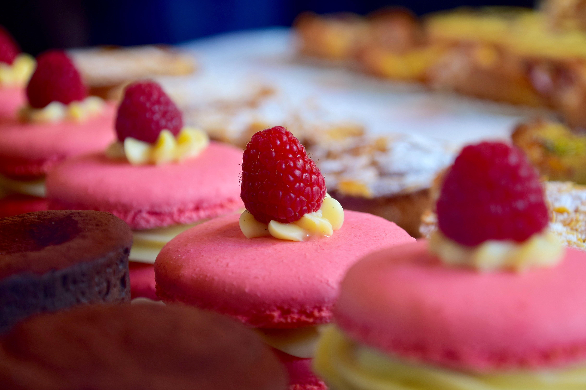

Tiny Bakery is a a home-based baking business dedicated to creating delicious treats that are both beautiful and mouthwatering. Our passion for baking began with a love for creating homemade goodies for our own family and friends, and we're thrilled to be able to share our treats with the wider community.
At Tiny Bakery, we use only the finest ingredients and take great care in every step of the baking process. From classic chocolate chip cookies to decadent cakes and cupcakes, our menu offers a wide range of options to satisfy any sweet tooth. We also offer gluten-free and vegan options so that everyone can enjoy our treats.
In addition to our commitment to quality, we pride ourselves on our personal touch. Every order is made with care and attention to detail, and we love working with our customers to create custom creations for special occasions.
Thank you for considering Tiny Bakery for your next sweet indulgence. We look forward to serving you and spreading a little bit of joy through our baked goods.